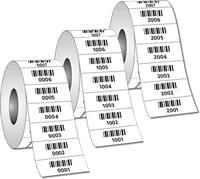

Get a Barcode
1. Print your barcode
You will need to print a barcode and discreetly place it somewhere on the gift. 
2. Register your barcode (if not a gift from Amazon)
Each barcode is a unique set of 12 characters to explicitly identify your gift. Our enhanced proprietary tracking software will track your gift every step of the way. To register your barcode, log in to the site and enter your 12 character code into the provided area.
3. Track your gift
Using Thanks for Nothing you will be able to see where your gift is at any time whether it be in your loved one's home or in the trash.